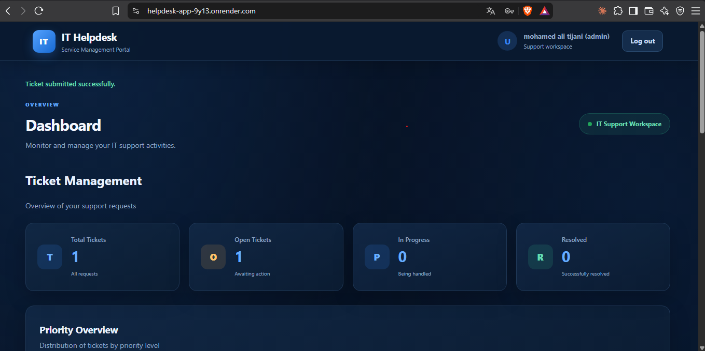

Application de ticketing helpdesk
Application de gestion des demandes IT : authentification et rôles, création et suivi des tickets, commentaires, filtres, tableau de bord et export CSV.
System & Network Administrator
Technicien supérieur en informatique de gestion (IPSET), je développe mes compétences en administration systèmes, réseaux et support IT à travers des projets personnels et des laboratoires pratiques documentés.
● Ouvert aux opportunités en support IT et administration réseau

La technique, c'est comprendre comment les choses fonctionnent — et savoir les expliquer.
Jeune diplômé d'un BTS et d'un BTP en Informatique de Gestion, je m'oriente vers le support informatique, l'administration réseau et le développement web.
Rigoureux et méthodique, je construis des projets personnels et des laboratoires pratiques. Je documente les configurations, les tests réalisés et les limites de chaque environnement.
Langues : arabe (langue maternelle), anglais (excellent), français (bon).
Projets personnels et laboratoires pratiques. Chaque réalisation présente les objectifs, les outils utilisés et le travail documenté.

Application de gestion des demandes IT : authentification et rôles, création et suivi des tickets, commentaires, filtres, tableau de bord et export CSV.

Conception d'une infrastructure pour une entreprise de 20 personnes : segmentation réseau, routage, DHCP, isolation des invités et concepts Windows Server / Active Directory.

Études de cas de dépannage réseau et analyse de paquets autour de DHCP, DNS, ARP, ICMP et TCP, avec des observations et des explications techniques.

Projet personnel : site responsive et multilingue pour une marque IT fictive, réalisé en HTML, CSS et JavaScript. Les contenus et scénarios sont fictifs. Le formulaire nécessite un déploiement Netlify avec les variables d'environnement configurées ; GitHub Pages sert de prévisualisation statique.
Domaines travaillés dans le cadre de ma formation et de mes projets personnels.
Je recherche une opportunité en support IT ou en administration réseau. Vous pouvez me contacter par e-mail ou consulter mes projets sur GitHub.